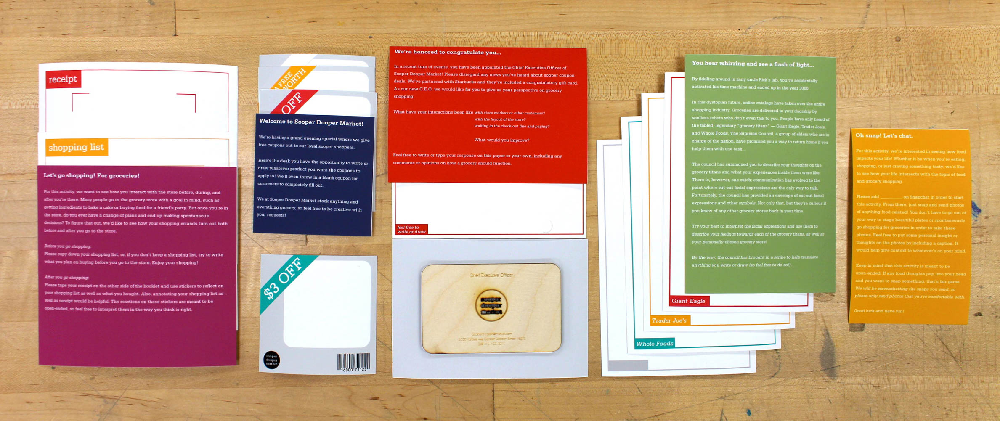
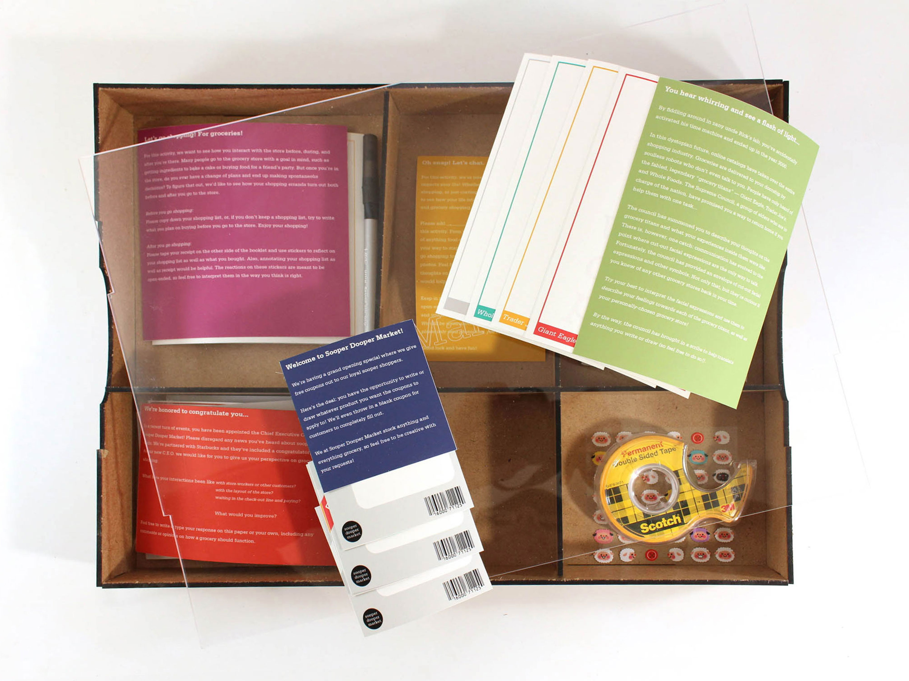
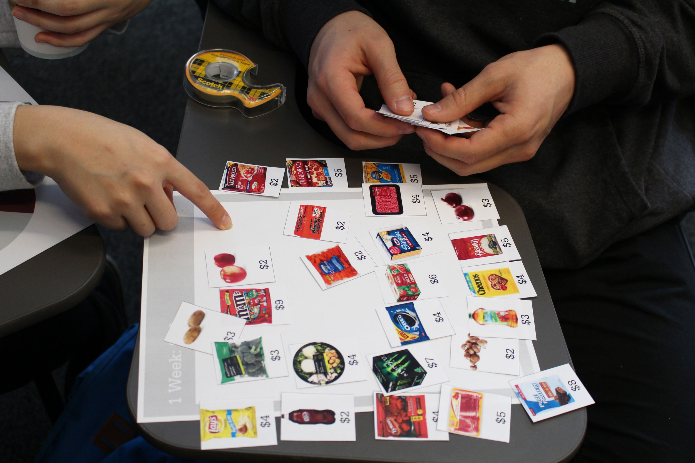
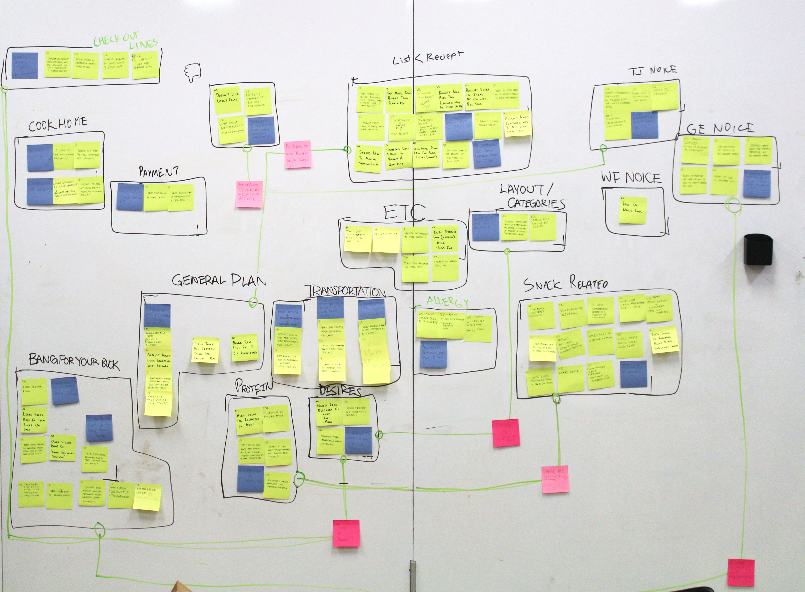
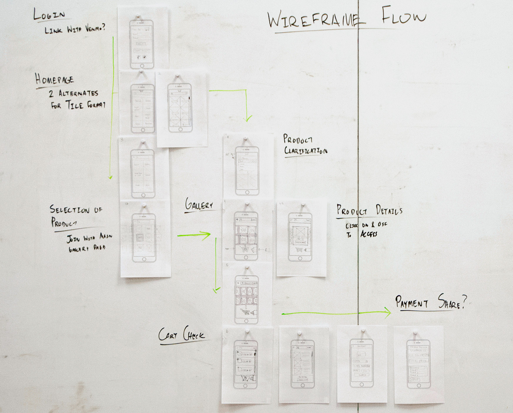
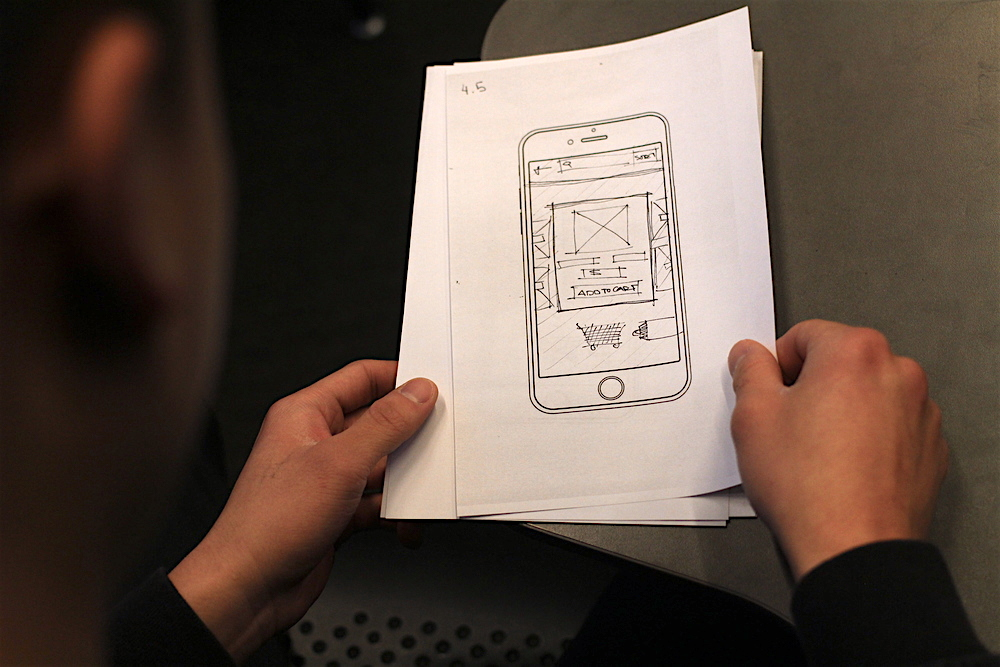
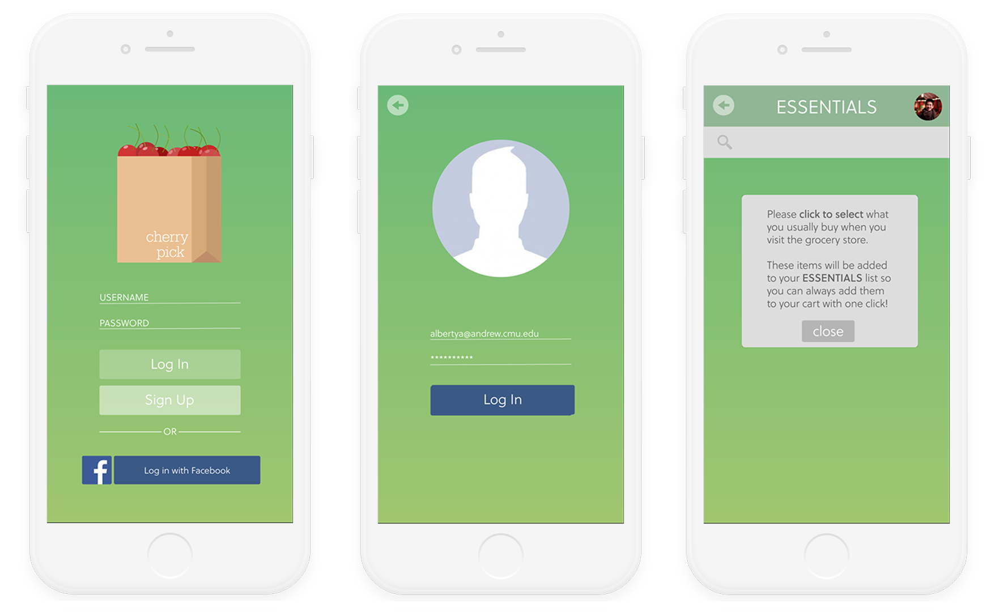
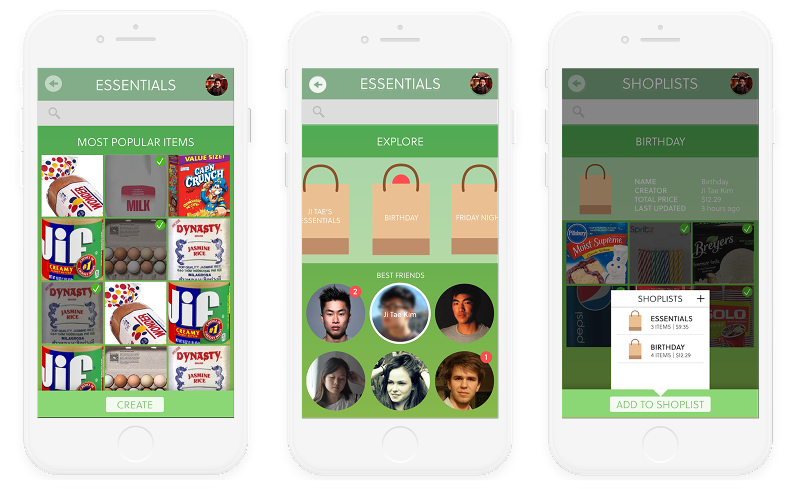

Cherry Pick
UX Research
May 2016
Contributions
Design Research
User Testing
Visual Design
Overview
Cherry Pick is a visual prototype of an app to improve mobile grocery shopping experiences. To help guide our design decisions, we employed a variety of research methods to gain insight on how people (namely college students) currently grocery shop. Our methods included sending out a cultural probe, affinity clustering, and hosting a generative workshop to understand people's shopping habits.
Cultural Probes
We sent out cultural probes (titled “MarKit”) to five university students—some undergraduate, some graduate. Each probe consisted of five activities ranging from sending food-related Snapchats to us to writing down their shopping lists and comparing them to their final receipts. These activities were designed specifically for us gain insight on people’s thoughts on their shopping experiences, as well as to look closer into their (un)intentional shopping habits. A week after sending them out, we got the probes back and began to analyze the results.



Generative Workshop
Following the cultural probe activities, we held a generative workshop with three other students to gauge a sense of what they prioritize while shopping. Our activities included having them choose from a list of grocery items given a limited budget, and writing down their “routine” before, during, and after the act of grocery shopping.

Affinity Clustering
Based on the results from the cultural probes and generative workshop, we wrote down quick notes of each completed activity and then grouped them together in clusters to take note of any patterns we noticed. From our affinity clustering, we noticed that the stores people had more favorable experiences in had much more natural and personal environments (i.e. Trader Joe’s, Whole Foods). From there, we decided to explore the idea of creating a personal experience for shoppers more through the creation of our app.

Paper Prototyping
After analyzing our results and clustering the patterns we discovered, we moved to making paper prototypes of interfaces that users could interact with. We first developed an example user flow, which involved the process of how the customer would login, search for, and add groceries to their cart.
To test our paper prototypes and user flow, we gave users a goal, such as "add an item to the cart," to see if they could complete the task through the proper navigation. This was a cheap, quick way of learning how intuitive and understandable certain layouts would work. Our testers also explained their thought process when they came across certain screens, such as wondering where the button to perform a certain was.


Visual Development
We agreed to focus on creating a personalized experience for the user to make them feel more comfortable with the idea of grocery shopping. Part of our mission was also to introduce the idea of having grocery shopping be a social activity rather than an individual one.
Cherry Pick allows people to create shopping lists for each and every occasion, such as fancy Friday nights or extravagant birthday parties. Shopping lists are viewable by one's friends, who can then choose to create their own lists by “cherry picking” items that they notice. This creates a more organized experience for one’s own grocery shopping, while also allowing for shopping and event inspiration from one’s social circles.


Post-Project Thoughts
This project was mainly based in the research realm of user experience, and I felt that the methods we utilized were definitely good strategies to explore further in the future. That being said, each stage felt relatively shallow due to the fast-paced timeline, but I believe that conducting more user testing and visual iterations can strongly improve our prototype. Regardless, I feel that due to the quantity of research conducted, our first full visual prototype was well-informed and well-guided by our findings. Future iterations would involve a more in-depth exploration of user testing sessions and consistently returning to our affinity diagrams to help keep us on track.
© Albert Yang 2018